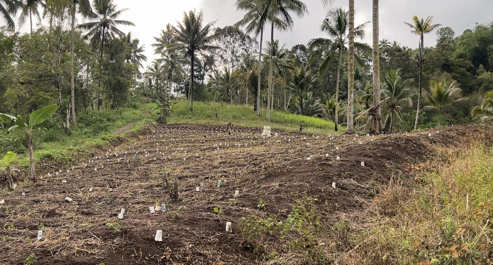
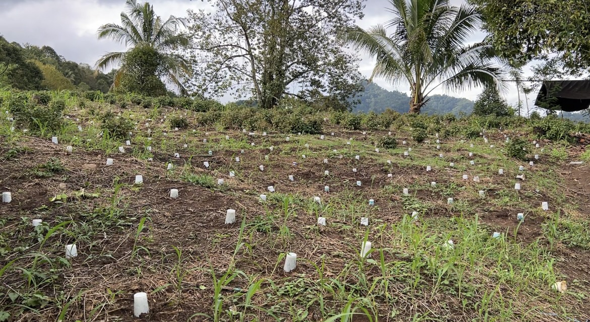
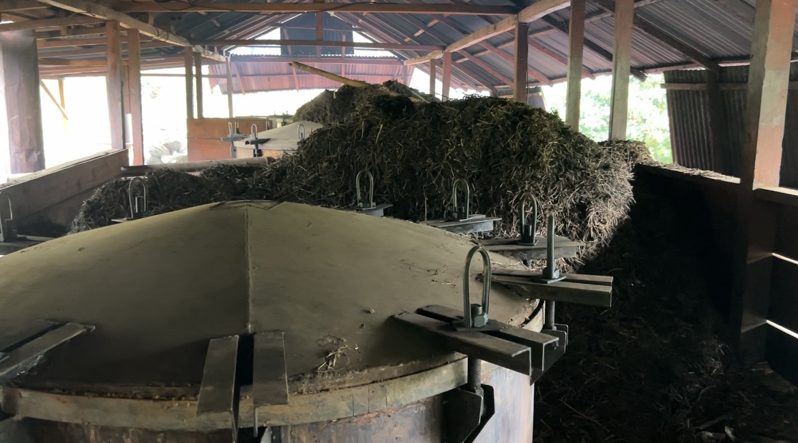
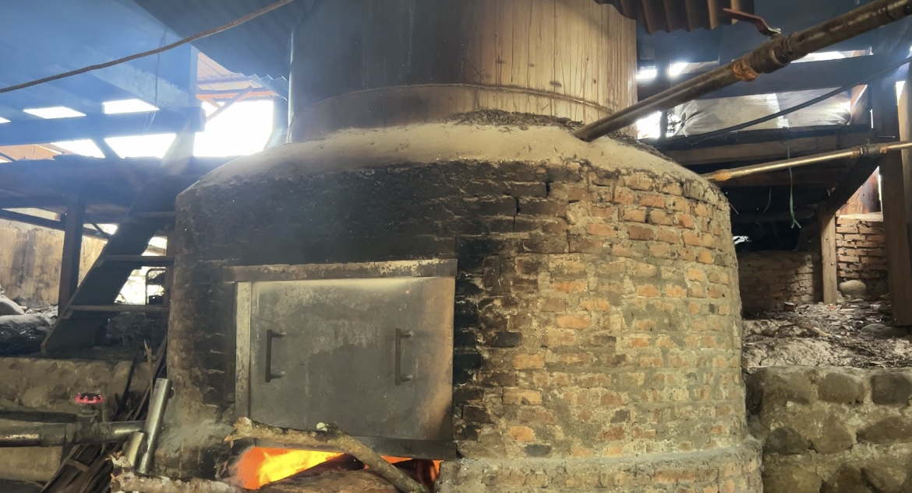

Kekayaan Lokal
Potensi Alam & Olahan
Hasil bumi melimpah yang menjadi penggerak ekonomi utama. Masyarakat Tompasobaru Satu sangat aktif dalam mengolah komoditas lokal, terutama budidaya dan penyulingan tanaman nilam yang bernilai ekonomi tinggi.
1
Lahan Pertanian & Penanaman

Pengolahan lahan dengan sistem bedengan dan pemasangan pelindung bibit.

Kondisi lahan pertanian yang subur, berpadu dengan tanaman jagung dan kelapa.
2
Proses Penyulingan Minyak Nilam

Bahan Baku
Tumpukan daun nilam kering yang siap untuk disuling.

Tungku Penyulingan
Fasilitas tungku bata tradisional berukuran besar.

Proses Pembakaran
Warga menjaga suhu pembakaran menggunakan kayu bakar.

Minyak Nilam
Hasil akhir penyulingan minyak nilam yang bernilai tinggi.